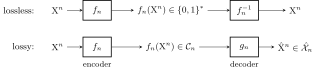
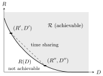
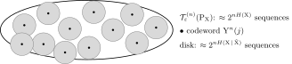
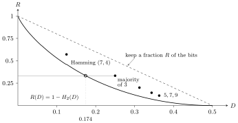

Lecture notes
Summary
- A lossy code \((f_n,g_n)\) maps a block \(x^n\) to a binary string and back to a reconstruction \(\hat{x}^n\). Its rate \(R_n\) is the expected number of bits per symbol, and its distortion \(D_n\) the expected distortion per symbol, with a separable distortion \(d_n(x^n,\hat{x}^n) = \sum_id(x_i,\hat{x}_i)\) (e.g., Hamming or squared error). Without loss of optimality, it quantizes \(x^n\) to a reconstruction and encodes the reconstruction losslessly.
- \((R,D)\) is achievable if some codes have \(\limsup_nR_n\le R\) and \(\limsup_nD_n\le D\). The closure \(\Rcal\) of the achievable pairs is convex (time sharing), and the rate-distortion function \(R(D) := \min\{R :\ (R,D)\in\Rcal\}\) is decreasing and convex.
- The information rate-distortion function \(\phi(D) := \min_{\P_{\hat{\rv{X}}|\rv{X}}:\ \EE[d(\rv{X},\hat{\rv{X}})]\le D} I(\P_{\rv{X}},\P_{\hat{\rv{X}}|\rv{X}})\) is decreasing, convex and continuous.
- Shannon’s lossy source coding theorem: for an i.i.d. source, \(R(D) = \phi(D)\). Converse: \(R_n\ge\phi(D_n)-\frac{\log(n\log M+2)}{n}\) for every code, by the chain rule (memoryless source), the averaged channel (separable distortion), and the convexity of the mutual information in the channel. Achievability: about \(2^{nI(\rv{X};\hat{\rv{X}})}\) random codewords drawn i.i.d. from \(\P_{\hat{\rv{X}}}^n\) cover the typical source sequences (covering lemma), and the joint-typicality encoder achieves \((I(\rv{X};\hat{\rv{X}}),\EE[d(\rv{X},\hat{\rv{X}})])\).
- Binary source \(\Bern(p)\) with the Hamming distortion: \(R(D) = H_2(p)-H_2(D)\) for \(D < \min\{p,1-p\}\), and \(0\) beyond. Encoding \(30000\) fair bits with \(10000\) bits gives a distortion at least \(0.174\), and about \(0.174\) is possible with long blocks, against \(\frac14\) for majority votes on three bits.
Contents
- 4.1 Lossy source coding
- 4.2 Operational rate-distortion function
- 4.3 Information rate-distortion function
- 4.4 Shannon’s lossy source coding theorem
- 4.4.1 Converse
- 4.4.2 Achievability
- 4.5 Binary source with Hamming distortion
4.1 Lossy source coding
In Lecture 3, a memoryless stationary (i.e., i.i.d.) source \(\rv{X}^n\sim\P^n\), encoded in blocks of \(n\) symbols, was recovered exactly, and the minimum expected number of bits per symbol tends to \(H(\P)\) as \(n\to\infty\). Images, sounds and videos need not be recovered exactly: a small error is acceptable, and it saves many bits. In lossy source coding, the decoder only returns a reconstruction \(\hat{\rv{X}}^n\) of the source:

Here \(\rv{X}^n = (\rv{X}_1,\ldots,\rv{X}_n)\sim\P_{\rv{X}}^n\), with \(\P_{\rv{X}}\in\Pcal(\Xcal)\) and the finite alphabet \(\Xcal = \{a_1,\ldots,a_M\}\). The encoder \(f_n:\Xcal^n\to\{0,1\}^*\) need not be one-to-one; its codewords form the code \(\Ccal_n := \{f_n(x^n) :\ x^n\in\Xcal^n\}\). The decoder \(g_n:\Ccal_n\to\Xcal^n\) returns the reconstruction \(\hat{\rv{X}}^n := g_n(f_n(\rv{X}^n))\), an element of the reconstruction codebook \(\hat{\Xcal}_n := \{g_n(y) :\ y\in\Ccal_n\}\subseteq\Xcal^n\). For \(n=1\), we write \(f\) and \(g\).
Distortion.
A distortion function \(d:\Xcal\times\Xcal\to[0,\infty)\) measures the cost \(d(x,\hat{x})\) of reconstructing \(x\) as \(\hat{x}\). We assume that \(d(x,x) = 0\) for all \(x\), and we let \(D_{\max} := \max_{x,\hat{x}}d(x,\hat{x}) < \infty\). Between blocks, the distortion is separable:
For example, the Hamming distortion \(d(x,\hat{x}) := \ind{x\ne\hat{x}}\) gives the number of symbols in error, \(d_n(x^n,\hat{x}^n) = \sum_{i=1}^n\ind{x_i\ne\hat{x}_i}\), and, for \(\Xcal\subset\mathbb{R}\) (or \(\mathbb{C}\)), the squared-error (Euclidean) distortion \(d(x,\hat{x}) := |x-\hat{x}|^2\) gives \(d_n(x^n,\hat{x}^n) = \|x^n-\hat{x}^n\|^2 = \sum_{i=1}^n|x_i-\hat{x}_i|^2\).
Rate and distortion of a code.
The pair \((f_n,g_n)\) is an \((n,R_n,D_n)\) code if its rate, in bits per source symbol, and its distortion, per source symbol, are
With the Hamming distortion, \(D_n\) is the expected fraction of symbols in error, e.g., the bit error rate of a binary source.
One-to-one decoders.
Without loss of optimality, \(g_n\) is one-to-one: if \(g_n(y) = g_n(y')\) for two codewords \(y\ne y'\), the encoder can send the shorter of the two in place of the other, which changes no reconstruction and does not increase the rate. Then \(f_n(x^n) = g_n^{-1}(\hat{x}^n)\) with \(\hat{x}^n = g_n(f_n(x^n))\): a lossy code first maps \(x^n\) to a reconstruction \(\hat{x}^n\in\hat{\Xcal}_n\) (quantization), then encodes \(\hat{x}^n\) with the lossless code \(g_n^{-1}\).
Example (three bits into one). Let \(\rv{X}^3\sim\Bern(\frac12)^3\) be three fair bits, with the Hamming distortion, and let the encoder output one bit, \(f_3:\{0,1\}^3\to\{0,1\}\), so that \(R_3 = \frac13\).
- Keep the first bit: \(f_3(x^3) := x_1\), \(g_3(0) := 000\) and \(g_3(1) := 100\). The first bit is always correct, and each of the two others is wrong with probability \(\frac12\), so \(D_3 = \frac13(0+\frac12+\frac12) = \frac13\).
- Majority vote: \(f_3(x^3) := 1\) if \(x^3\) has at least two \(1\)s and \(0\) otherwise, \(g_3(0) := 000\) and \(g_3(1) := 111\), so that \(\hat{\Xcal}_3 = \{000,111\}\). The reconstruction is the closer of \(000\) and \(111\) to \(x^3\): it equals \(x^3\) if \(x^3\in\{000,111\}\) (probability \(\frac14\)), and differs from \(x^3\) in one bit otherwise (probability \(\frac34\)). So \(D_3 = \frac34\cdot\frac13 = \frac14\).
No one-bit encoder of three bits does better (Problem 1). But what is the minimum distortion if \(n = 30000\) fair bits are encoded with \(10000\) bits, or, more generally, at the rate \(\frac13\) when \(n\to\infty\)? Section 4.5 answers: about \(0.174\).
4.2 Operational rate-distortion function
A rate-distortion pair \((R,D)\) is achievable for the source \(\P_{\rv{X}}\) if there exists a sequence of \((n,R_n,D_n)\) codes, \(n = 1,2,\ldots\), such that
In words, for every \(\delta > 0\) and every large enough \(n\), a code of length \(n\) has a rate at most \(R+\delta\) and a distortion at most \(D+\delta\). The rate-distortion region \(\Rcal\equiv\Rcal(\P_{\rv{X}})\) is the closure of the set of achievable pairs, and the (operational) rate-distortion function and the distortion-rate function are
The minima exist, since \(\Rcal\) is closed, \((\lceil\log M\rceil,0)\) is achievable by encoding each symbol with \(\lceil\log M\rceil\) bits, and \((0,D_{\max})\) by sending nothing (\(f_n(x^n) := \emptyset\)). Codes that achieve \((R,D)\) also achieve every \((R',D')\) with \(R'\ge R\) and \(D'\ge D\), so \(\Rcal\) is the set of pairs above the graph of \(R(D)\) (figure below), and \(R(D)\) is decreasing.
Convexity of the rate-distortion region. \(\Rcal\) is convex. Consequently, \(D\mapsto R(D)\) is convex.

Let \((R',D')\) and \((R'',D'')\) be achievable, with codes \((f'_n,g'_n)\) and \((f''_n,g''_n)\), and let \(\lambda\in(0,1)\). For each \(n\), let \(n_1 := \lceil\lambda n\rceil\) and \(n_2 := n-n_1\). The time-sharing code encodes the first \(n_1\) symbols with the first code and the last \(n_2\) symbols with the second:
where the header \(h\) gives the length \(l_1 := l(f'_{n_1}(x^{n_1}))\) of the first codeword, so that the decoder knows where the second one starts: \(h\) is the binary expansion of \(l_1+1\), preceded by as many zeros as it has bits, minus one (e.g., \(l_1 = 4\) gives \(h = 00101\)). This is a prefix code for the integers, with \(l(h)\le2\log(l_1+1)+1\) (Problem 10: the Shannon code of a distribution of the order of \(\frac{1}{k^2}\)). Since \(\rv{X}^{n_1}\sim\P_{\rv{X}}^{n_1}\) and \(\rv{X}_{n_1+1}^n\sim\P_{\rv{X}}^{n_2}\), the new code has
where \(\EE[l(h)]\le2\log(n_1R'_{n_1}+1)+1\) by Jensen’s inequality, as the first codeword has \(n_1R'_{n_1}\) bits on average. As \(n\to\infty\), \(\frac{n_1}{n}\to\lambda\), \(\frac{n_2}{n}\to1-\lambda\), and the header costs \(\frac{\EE[l(h)]}{n}\to0\) bits per symbol, since the rates \(R'_{n_1}\) are bounded, so \(\limsup_n\tilde{R}_n\le\lambda R'+(1-\lambda)R''\) and \(\limsup_n\tilde{D}_n\le\lambda D'+(1-\lambda)D''\). Hence the set of achievable pairs is convex, and so is its closure \(\Rcal\). Finally, \((R(D_1),D_1)\) and \((R(D_2),D_2)\) are in \(\Rcal\), hence so is \((\lambda R(D_1)+(1-\lambda)R(D_2),\ \lambda D_1+(1-\lambda)D_2)\), which gives \(R(\lambda D_1+(1-\lambda)D_2)\le\lambda R(D_1)+(1-\lambda)R(D_2)\).
For instance, time sharing between the majority vote of Section 4.1 and a lossless code gives every pair on the segment from \((\frac13,\frac14)\) to \((1,0)\) (Problem 2).
4.3 Information rate-distortion function
The information rate-distortion function of the source \(\P_{\rv{X}}\) is
the least mutual information between the source \(\rv{X}\sim\P_{\rv{X}}\) and a reconstruction \(\hat{\rv{X}}\) produced by a channel \(\P_{\hat{\rv{X}}|\rv{X}}\) with an expected distortion at most \(D\). The minimum exists: the set \(\Pcal(\Xcal|\Xcal)\) of channels (\(M\) pmfs on \(\Xcal\)) is compact, the constraint set is closed, since the expected distortion is linear in \(\P_{\hat{\rv{X}}|\rv{X}}\), and non-empty, since the channel \(\hat{\rv{X}} = \rv{X}\) has the distortion \(0\), and \(\P_{\hat{\rv{X}}|\rv{X}}\mapsto I(\P_{\rv{X}},\P_{\hat{\rv{X}}|\rv{X}})\) is continuous. For example, with the Hamming distortion, \(\EE[d(\rv{X},\hat{\rv{X}})] = \PP(\rv{X}\ne\hat{\rv{X}})\le0\) forces \(\hat{\rv{X}} = \rv{X}\), so \(\phi(0) = I(\rv{X};\rv{X}) = H(\P_{\rv{X}})\), the minimum rate of lossless coding. At the other end, \(\phi(D) = 0\) if and only if \(D\ge\min_{\hat{x}}\EE[d(\rv{X},\hat{x})]\), the distortion of the best constant reconstruction (Problem 4).
Properties. \(D\mapsto\phi(D)\) is decreasing, convex, and continuous on \([0,\infty)\).
Decreasing: the constraint set grows with \(D\).
Convex: let \(D_1,D_2\ge0\) and \(\lambda\in[0,1]\), and let \(\P^{(1)}_{\hat{\rv{X}}|\rv{X}}\) and \(\P^{(2)}_{\hat{\rv{X}}|\rv{X}}\) attain \(\phi(D_1)\) and \(\phi(D_2)\). The channel \(\P_{\hat{\rv{X}}|\rv{X}} := \lambda\P^{(1)}_{\hat{\rv{X}}|\rv{X}} + (1-\lambda)\P^{(2)}_{\hat{\rv{X}}|\rv{X}}\) has the expected distortion \(\lambda\EE_{\P_{\rv{X}}\P^{(1)}_{\hat{\rv{X}}|\rv{X}}}[d(\rv{X},\hat{\rv{X}})] +(1-\lambda)\EE_{\P_{\rv{X}}\P^{(2)}_{\hat{\rv{X}}|\rv{X}}}[d(\rv{X},\hat{\rv{X}})] \le\lambda D_1+(1-\lambda)D_2\), hence
by the convexity of \(\P_{\hat{\rv{X}}|\rv{X}}\mapsto I(\P_{\rv{X}},\P_{\hat{\rv{X}}|\rv{X}})\) (Lecture 1).
Continuous on \((0,\infty)\): a convex function is continuous inside its interval, because the slopes of its chords increase: for \(0 < a < D < D' < b\),
so \(\phi(D')\to\phi(D)\) as \(D'\downarrow D\), and similarly as \(D'\uparrow D\).
Continuous at \(0\): let \(D_k\downarrow0\), and let \(\P^{(k)}_{\hat{\rv{X}}|\rv{X}}\) attain \(\phi(D_k)\). Since \(\Pcal(\Xcal|\Xcal)\) is compact, a subsequence converges to some \(\P^*_{\hat{\rv{X}}|\rv{X}}\). The expected distortion \(\P_{\hat{\rv{X}}|\rv{X}}\mapsto\EE_{\P_{\rv{X}}\P_{\hat{\rv{X}}|\rv{X}}}[d(\rv{X},\hat{\rv{X}})]\) is linear, hence continuous, so that of \(\P^*_{\hat{\rv{X}}|\rv{X}}\) is at most \(\lim_kD_k = 0\). Hence \(\phi(0)\le I(\P_{\rv{X}},\P^*_{\hat{\rv{X}}|\rv{X}}) = \lim_k\phi(D_k)\le\phi(0)\): the equality, with the limit along the subsequence, is the continuity of \(\P_{\hat{\rv{X}}|\rv{X}}\mapsto I(\P_{\rv{X}},\P_{\hat{\rv{X}}|\rv{X}})\), and the last inequality holds because \(\phi\) is decreasing.
So \(R(D)\) and \(\phi(D)\) are both decreasing and convex. The main result of the lecture is that they are equal.
4.4 Shannon’s lossy source coding theorem
Shannon’s lossy source coding theorem (rate-distortion theorem). For every memoryless stationary source \(\P_{\rv{X}}^n\),
- Converse (necessity): every achievable pair \((R,D)\) satisfies \(R\ge\phi(D)\), i.e., \(R(D)\ge\phi(D)\).
- Achievability (sufficiency): \((\phi(D),D)\) is achievable, i.e., \(R(D)\le\phi(D)\), with codewords of a fixed length.
The operational function \(R(D)\) is an optimization over all codes of all lengths; the information function \(\phi(D)\) is an optimization over a single channel, which can be computed (Section 4.5). Shannon introduced this rate in 1948, for a source with a fidelity criterion, and proved the theorem for discrete sources in 1959, where he named \(R(D)\) the rate-distortion function.
4.4.1 Converse
We first show a bound for every \((n,R_n,D_n)\) code, and then let \(n\to\infty\):
Proof of the lower bound on \(R_n\).
By Section 4.1, making \(g_n\) one-to-one does not increase \(R_n\) and does not change \(D_n\), so we can assume that \(g_n\) is one-to-one. Then \(f_n(\rv{X}^n) = g_n^{-1}(\hat{\rv{X}}^n)\): the encoder is a lossless code for \(\hat{\rv{X}}^n\), which takes at most \(M^n\) values. By Lecture 3 (Section 3.1), its expected length is at least \(H(\hat{\rv{X}}^n) - \log\lceil\log(M^n+1)\rceil \ge H(\hat{\rv{X}}^n) - \log(n\log M+2)\). Since \(H(\hat{\rv{X}}^n) = I(\rv{X}^n;\hat{\rv{X}}^n) + H(\hat{\rv{X}}^n\cond\rv{X}^n) \ge I(\rv{X}^n;\hat{\rv{X}}^n)\),
It remains to show that \(I(\rv{X}^n;\hat{\rv{X}}^n)\ge n\phi(D_n)\), for the joint distribution of \((\rv{X}^n,\hat{\rv{X}}^n)\) given by the code. Let \(\P_{\hat{\rv{X}}_i|\rv{X}_i}\) be the channel from \(\rv{X}_i\) to \(\hat{\rv{X}}_i\), and let \(\tilde{\P}_{\hat{\rv{X}}|\rv{X}} := \frac1n\sum_{i=1}^n\P_{\hat{\rv{X}}_i|\rv{X}_i}\) be their average.
Step \(\circnum{1}\) (memoryless source): \(I(\rv{X}^n;\hat{\rv{X}}^n)\ge\sum_iI(\rv{X}_i;\hat{\rv{X}}_i) = \sum_iI(\P_{\rv{X}},\P_{\hat{\rv{X}}_i|\rv{X}_i})\). By the chain rule, and since \(\rv{X}_i\) is independent of \(\rv{X}^{i-1}\),
\[I(\rv{X}^n;\hat{\rv{X}}^n) = \sum_{i=1}^nI(\rv{X}_i;\hat{\rv{X}}^n\cond\rv{X}^{i-1}) = \sum_{i=1}^nI(\rv{X}_i;\hat{\rv{X}}^n,\rv{X}^{i-1}) \ge \sum_{i=1}^nI(\rv{X}_i;\hat{\rv{X}}_i),\]where the middle equality holds because, by the chain rule, \(I(\rv{X}_i;\hat{\rv{X}}^n,\rv{X}^{i-1})\) is the sum of \(I(\rv{X}_i;\rv{X}^{i-1}) = 0\) and \(I(\rv{X}_i;\hat{\rv{X}}^n\cond\rv{X}^{i-1})\), and the inequality drops variables (chain rule and \(I\ge0\)).
Step \(\circnum{2}\) (separable distortion): \(D_n = \EE_{\P_{\rv{X}}\tilde{\P}_{\hat{\rv{X}}|\rv{X}}}[d(\rv{X},\hat{\rv{X}})]\). Indeed, since \(\rv{X}_i\sim\P_{\rv{X}}\) for every \(i\),
\[\begin{aligned} D_n = \frac1n\sum_{i=1}^n\EE\bigl[d(\rv{X}_i,\hat{\rv{X}}_i)\bigr] &= \frac1n\sum_{i=1}^n\sum_{x,\hat{x}}\P_{\rv{X}}(x) \P_{\hat{\rv{X}}_i|\rv{X}_i}(\hat{x}\cond x)d(x,\hat{x})\\ &= \sum_{x,\hat{x}}\P_{\rv{X}}(x)\tilde{\P}_{\hat{\rv{X}}|\rv{X}}(\hat{x}\cond x)d(x,\hat{x}). \end{aligned}\]- Step \(\circnum{3}\) (convexity): \(\frac1n\sum_{i=1}^nI(\P_{\rv{X}},\P_{\hat{\rv{X}}_i|\rv{X}_i}) \ge I(\P_{\rv{X}},\tilde{\P}_{\hat{\rv{X}}|\rv{X}})\), by the convexity of \(\P_{\hat{\rv{X}}|\rv{X}}\mapsto I(\P_{\rv{X}},\P_{\hat{\rv{X}}|\rv{X}})\) (Lecture 1).
By Step \(\circnum{2}\), the channel \(\tilde{\P}_{\hat{\rv{X}}|\rv{X}}\) satisfies the constraint of \(\phi(D_n)\), so Steps \(\circnum{1}\) and \(\circnum{3}\) give
which proves \(\circnum{*}\). The averaged channel \(\tilde{\P}_{\hat{\rv{X}}|\rv{X}}\) is the channel from \(\rv{X}_\rv{J}\) to \(\hat{\rv{X}}_\rv{J}\) at a time \(\rv{J}\) drawn uniformly from \(\{1,\ldots,n\}\): a block code becomes a single channel with the same distortion and less mutual information per symbol. Steps \(\circnum{2}\) and \(\circnum{3}\) can be replaced by \(\sum_iI(\rv{X}_i;\hat{\rv{X}}_i)\ge\sum_i\phi\bigl(\EE[d(\rv{X}_i,\hat{\rv{X}}_i)]\bigr) \ge n\phi(D_n)\), by the definition of \(\phi\) and its convexity.
Conclusion.
Let \((R,D)\) be achievable, with codes as in the definition. Then
where the second inequality is \(\circnum{*}\), whose last term tends to \(0\), the third holds because \(\phi\) is continuous (along a subsequence \(D_{n_k}\to\limsup_nD_n\)), and the last as \(\phi\) is decreasing and \(\limsup_nD_n\le D\). By continuity, \(R\ge\phi(D)\) also holds on the closure \(\Rcal\), so \(R(D)\ge\phi(D)\).
For a code whose codewords all have \(k_n\) bits, the term \(\frac{\log(n\log M+2)}{n}\) can be dropped: \(nR_n = k_n\ge H(f_n(\rv{X}^n))\ge H(\hat{\rv{X}}^n)\), since \(f_n(\rv{X}^n)\) takes at most \(2^{k_n}\) values and \(\hat{\rv{X}}^n\) is a function of it. So such a code satisfies \(\phi(D_n)\le\frac{k_n}{n}\) for every \(n\).
4.4.2 Achievability
Fix a channel \(\P_{\hat{\rv{X}}|\rv{X}}\in\Pcal(\Xcal|\Xcal)\), and let \(\P_{\rv{X}\hat{\rv{X}}} := \P_{\rv{X}}\P_{\hat{\rv{X}}|\rv{X}}\), with the marginal \(\P_{\hat{\rv{X}}} := \P_{\hat{\rv{X}}|\rv{X}}\circ\P_{\rv{X}}\). We show that
is achievable, with codewords of a fixed length. For a channel \(\P^*_{\hat{\rv{X}}|\rv{X}}\) that attains the minimum in \(\phi(D)\), this pair is \((\phi(D),D')\) with \(D'\le D\), so \((\phi(D),D)\) is achievable and \(R(D)\le\phi(D)\).
Random coding.
Instead of constructing a good code, Shannon draws the codebook at random and computes the distortion averaged over the random codebooks: at least one codebook does at least as well as the average. The average is much easier to analyze than any particular code.
Covering lemma. Let \(\epsilon\in(0,1]\), \(K\ge1\), \(\rv{X}^n\sim\P_{\rv{X}}^n\), and let \(\rv{Y}^n(1),\ldots,\rv{Y}^n(K)\) be i.i.d. with the distribution \(\P_{\hat{\rv{X}}}^n\), independent of \(\rv{X}^n\). Then
which tends to \(0\) if \(n\epsilon^2\to\infty\) and \(K2^{-n(I(\rv{X};\hat{\rv{X}})+2\epsilon H(\hat{\rv{X}}))}\to\infty\).
The event \(\rv{X}^n\notin\Tcal_{\epsilon/2}^{(n)}(\P_{\rv{X}})\) has probability at most \(\delta_T(\frac{\epsilon}{2},n,\P_{\rv{X}})\) (Lecture 2, Section 2.3). Otherwise, fix \(\rv{X}^n = x^n\in\Tcal_{\epsilon/2}^{(n)}(\P_{\rv{X}})\). By the joint typicality lemma (Lecture 2, Section 2.4, with \(x^n\) given and the other sequence drawn from \(\P_{\hat{\rv{X}}}^n\)), each \(\rv{Y}^n(j)\) is jointly typical with \(x^n\) with a probability \(\alpha\ge\alpha_n\), independently of the others, so none of them is with probability \((1-\alpha)^K\le e^{-K\alpha}\le e^{-K\alpha_n}\), since \(1-t\le e^{-t}\). Finally, the two conditions make \(\delta_T\to0\) and \(K\alpha_n\to\infty\).
Why \(I(\rv{X};\hat{\rv{X}})\)? About \(2^{nH(\rv{X})}\) typical source sequences must be covered, and a codeword is jointly typical with about \(2^{nH(\rv{X}\cond\hat{\rv{X}})}\) of them (Lecture 2), so at least about \(2^{n(H(\rv{X})-H(\rv{X}\cond\hat{\rv{X}}))} = 2^{nI(\rv{X};\hat{\rv{X}})}\) codewords are needed, and random codewords nearly suffice (Problem 9 makes this count exact for fair bits):

The random code.
Let \(\epsilon := n^{-1/3}\), so that \(\epsilon\to0\) and \(n\epsilon^2 = n^{1/3}\to\infty\), and let
- \(\circnum{1}\) Codebook: draw \(K\) codewords \(\rv{Y}^n(1),\ldots,\rv{Y}^n(K)\) i.i.d. \(\sim\P_{\hat{\rv{X}}}^n\). They form the reconstruction codebook \(\hat{\Xcal}_n\), known to the encoder and the decoder.
- \(\circnum{2}\) Encoder: \(f_n(x^n)\) is the \(k_n\)-bit binary representation of \(j-1\), where \(j\) is the smallest index such that \((x^n,\rv{Y}^n(j))\in\Tcal_\epsilon^{(n)}(\P_{\rv{X}\hat{\rv{X}}})\), and \(j := 1\) if there is none.
- \(\circnum{3}\) Decoder: \(g_n\) reads \(j\) from the \(k_n\) bits and returns \(\rv{Y}^n(j)\).
Each codeword is independent of \(\rv{X}^n\), but the reconstruction \(\hat{\rv{X}}^n\), chosen for \(\rv{X}^n\), is not.
Rate.
Every \(f_n(x^n)\) has \(k_n\) bits, so \(R_n = \frac{k_n}{n}\le I(\rv{X};\hat{\rv{X}})+2\epsilon H(\hat{\rv{X}})+\epsilon+\frac1n \to I(\rv{X};\hat{\rv{X}}) = R\).
Distortion.
Let \(\Acal\) be the event that some \(\rv{Y}^n(j)\) is jointly typical with \(\rv{X}^n\). On \(\Acal\), the reconstruction \(\hat{\rv{X}}^n\) satisfies \((\rv{X}^n,\hat{\rv{X}}^n)\in\Tcal_\epsilon^{(n)}(\P_{\rv{X}\hat{\rv{X}}})\), and the typical average lemma (Lecture 2) applied to \(d\ge0\) gives \(\frac1nd_n(\rv{X}^n,\hat{\rv{X}}^n)\le(1+\epsilon)\EE_{\P_{\rv{X}\hat{\rv{X}}}}[d(\rv{X},\hat{\rv{X}})] = (1+\epsilon)D\). Otherwise, \(\frac1nd_n(\rv{X}^n,\hat{\rv{X}}^n)\le D_{\max}\). Let \(D_n(\hat{\Xcal}_n)\) be the distortion of the code with the codebook \(\hat{\Xcal}_n\), an expectation over the source only. Averaged over the random codebook,
where the middle expectation is over the source and the codebook. So some codebook \(\hat{\Xcal}_n^*\) gives a code with \(D_n := D_n(\hat{\Xcal}_n^*)\) at most the right-hand side. By the covering lemma, \(\PP(\Acal^c)\to0\), since \(n\epsilon^2\to\infty\) and \(K2^{-n(I(\rv{X};\hat{\rv{X}})+2\epsilon H(\hat{\rv{X}}))}\ge2^{n\epsilon} = 2^{n^{2/3}}\). These codes have \(\limsup_nR_n = R\) and \(\limsup_nD_n\le D\), so \((R,D)\) is achievable. The proof is complete.
4.5 Binary source with Hamming distortion
Let \(\rv{X}\sim\Bern(p)\), \(p\in[0,1]\) (i.e., \(\P_{\rv{X}}(1) = p\)), with the Hamming distortion \(d(x,\hat{x}) = \ind{x\ne\hat{x}} = x\oplus\hat{x}\), where \(\oplus\) is the addition modulo \(2\). Let \(H_2(p) := H(\Bern(p)) = p\log\frac1p+(1-p)\log\frac{1}{1-p}\), which increases on \([0,\frac12]\).
Rate-distortion function of a binary source. With the Hamming distortion,
By the theorem, \(R(D) = \phi(D)\). Exchanging the symbols \(0\) and \(1\) changes neither the mutual information nor the distortion, and \(H_2(p) = H_2(1-p)\), so we can assume \(p\le\frac12\).
Case \(D\ge p\): the constant reconstruction \(\hat{\rv{X}} = 0\) has \(\EE[d(\rv{X},\hat{\rv{X}})] = \PP(\rv{X} = 1) = p\le D\) and \(I(\rv{X};\hat{\rv{X}}) = 0\), so \(\phi(D) = 0\).
Case \(D < p\), lower bound: take a channel with \(\EE[d(\rv{X},\hat{\rv{X}})] = \PP(\rv{X}\ne\hat{\rv{X}})\le D\), and let \(\rv{Z} := \rv{X}\oplus\hat{\rv{X}}\sim\Bern(\PP(\rv{X}\ne\hat{\rv{X}}))\). Given \(\hat{\rv{X}} = \hat{x}\), the map \(x\mapsto x\oplus\hat{x}\) is one-to-one, so \(H(\rv{X}\cond\hat{\rv{X}}) = H(\rv{Z}\cond\hat{\rv{X}})\), and
since conditioning reduces entropy and \(H_2\) increases on \([0,\frac12]\) (\(\PP(\rv{X}\ne\hat{\rv{X}})\le D < \frac12\)).
Case \(D < p\), a channel that attains it: both inequalities are equalities if \(\rv{Z}\sim\Bern(D)\) is independent of \(\hat{\rv{X}}\). So let \(\hat{\rv{X}}\sim\Bern(q)\) and \(\rv{Z}\sim\Bern(D)\) be independent, and \(\rv{X} := \hat{\rv{X}}\oplus\rv{Z}\), a binary symmetric channel from \(\hat{\rv{X}}\) to \(\rv{X}\). Then \(\rv{X}\sim\Bern(q\star D)\) with \(q\star D = q(1-D)+(1-q)D = q(1-2D)+D\) (Lecture 1), and the choice \(q := \frac{p-D}{1-2D}\in[0,1]\) gives \(\rv{X}\sim\Bern(p)\). This joint distribution of \((\rv{X},\hat{\rv{X}})\) defines a channel \(\P_{\hat{\rv{X}}|\rv{X}}\) with \(\EE[d(\rv{X},\hat{\rv{X}})] = \PP(\rv{Z} = 1) = D\) and \(I(\rv{X};\hat{\rv{X}}) = H_2(p) - H(\rv{Z}\cond\hat{\rv{X}}) = H_2(p) - H_2(D)\).
For \(D = 0\), \(R(0) = H_2(p)\): lossless coding (Lecture 3) is the case \(D = 0\). For fair bits (\(p = \frac12\)), \(R(D) = 1-H_2(D)\) on \([0,\frac12]\), plotted below with the simple codes discussed next, and the distortion-rate function \(D(R)\) is the solution \(D\in[0,\frac12]\) of \(H_2(D) = 1-R\).

Back to the example of Section 4.1. Encoding \(n = 30000\) fair bits with \(10000\) bits is a code with codewords of \(k_n = 10000\) bits. By the converse, its distortion satisfies \(\phi(D_n)\le\frac13\), i.e., \(D_n\ge D(\frac13)\approx0.174\), the solution of \(H_2(D) = \frac23\), and by the achievability, distortions close to \(0.174\) are possible at the rate \(\frac13\) for large \(n\), while the majority vote on blocks of three bits gives \(\frac14\). Simple codes stay far from \(R(D)\): keeping a fraction \(R\) of the bits and setting the others to \(0\) gives \(D = \frac{1-R}{2}\), majority votes on blocks of \(2m+1\) bits give rates \(\frac{1}{2m+1}\) (Problem 2), and the Hamming code of length \(7\) gives \((R,D) = (\frac47,\frac18)\), while \(R(\frac18)\approx0.456\) (Problem 3). The same method gives the rate-distortion function of a uniform source on \(m\) symbols (Problem 5) and, beyond finite alphabets, of a Gaussian source with the squared-error distortion, \(R(D) = \frac12\log\frac{\sigma^2}{D}\) for \(D\le\sigma^2\) (Problem 8, which compares it with scalar quantization). In practice, images, sounds and videos are compressed by quantization followed by a lossless code, as in Section 4.1.
Quiz
22 questions · one correct answer each
Pick an answer to check it. Your answers are kept in this browser only.
0 of 22 answered
-
A lossy code \((f_n,g_n)\) differs from a lossless code in that
-
With the Hamming distortion, what is \(d_4(0110,0011)\)?
-
A code for blocks of \(n = 8\) symbols has codewords that all have \(3\) bits. What is its rate \(R_8\), in bits per source symbol?
-
Three fair bits are encoded with one bit, their majority vote \(b\), and reconstructed as \(bbb\). What is the distortion \(D_3\) with the Hamming distortion (the bit error rate)?
-
Why can we assume, without loss of optimality, that the decoder \(g_n\) is one-to-one?
-
Which statement is the definition of an achievable pair \((R,D)\)?
-
The pair \((R,D)\) is achievable. Which pair is then always achievable?
-
For fair bits with the Hamming distortion, the majority vote on blocks of three bits achieves \((\frac13,\frac14)\), and sending every bit achieves \((1,0)\). Time sharing, with each code on half of the symbols, achieves
-
In the time-sharing code of Section 4.2, the codeword starts with a short header. What is it for?
-
Since the rate-distortion region \(\Rcal\) is convex, the function \(R(D)\) is
-
The information rate-distortion function \(\phi(D)\) is
-
With the Hamming distortion, for every source \(\P_{\rv{X}}\) on an alphabet of size \(M\), \(\phi(0)\) equals
-
Why is \(\phi\) convex?
-
When is \(\phi(D) = 0\)?
-
For a memoryless source on a finite alphabet, Shannon’s lossy source coding theorem states that
-
In the proof of the converse, where is the independence of \(\rv{X}_1,\ldots,\rv{X}_n\) used?
-
The codewords of an \((n,R_n,D_n)\) code all have \(k_n\) bits. Which statement holds for every \(n\)?
-
In the proof of achievability, the codewords \(\rv{Y}^n(1),\ldots,\rv{Y}^n(K)\) are
-
About how many codewords does the random code of the achievability proof use?
-
For fair bits with the Hamming distortion, \(R(\frac14)\) is about
-
For the source \(\mathrm{Bern}(0.1)\) with the Hamming distortion, \(R(0.2)\) equals
-
A file of \(30000\) fair bits is stored with \(10000\) bits, with the best code of a large block length. About what fraction of the bits is wrong after decoding?
Exercises
10 problems
-
Problem 1 Three bits into one bit
Let \(\rv{X}^3\) be three fair bits (i.i.d. \(\mathrm{Bern}(\frac12)\)), with the Hamming distortion, and let \(f_3:\{0,1\}^3\to\{0,1\}\) be a one-bit encoder, with a decoder \(g_3\) and the reconstruction words \(c_0 := g_3(0)\) and \(c_1 := g_3(1)\) in \(\{0,1\}^3\).
Show that, for given \(c_0\) and \(c_1\), the best encoder maps \(x^3\) to the index \(b\) of the closer word \(c_b\), and that its distortion is then
\[D_3 = \frac13\EE\bigl[\min\{d_3(\rv{X}^3,c_0),d_3(\rv{X}^3,c_1)\}\bigr].\]- Let \(k := d_3(c_0,c_1)\) be the number of positions where \(c_0\) and \(c_1\) differ. Show that \(D_3\) only depends on \(k\), and compute it for \(k = 0,1,2,3\). Hint: in the positions where \(c_0\) and \(c_1\) agree, the error does not depend on the encoder.
- Deduce that every one-bit encoder of three fair bits has \(D_3\ge\frac14\), with equality for the majority vote of Section 4.1. Which value of \(k\) does “keep the first bit” have?
- Compare with \(R(\frac14)\) and \(D(\frac13)\) (Section 4.5).
-
Problem 2 Majority votes and time sharing
The source is fair bits with the Hamming distortion. For \(n = 2m+1\), the majority code sends one bit \(b\), the majority bit of \(x^n\), and reconstructs \(b\,b\cdots b\) (\(n\) copies).
- Show that its distortion is \(D_n = \frac1n\EE[\min\{\rv{W},n-\rv{W}\}]\), where \(\rv{W}\sim\mathrm{Bin}(n,\frac12)\), and compute it for \(n = 3,5,7\).
- Show that \(D_n\ge\frac12-\frac{1}{2\sqrt{n}}\), so that \(D_n\to\frac12\) while the rate \(\frac1n\to0\). Hint: \(\min\{\rv{W},n-\rv{W}\} = \frac n2-|\rv{W}-\frac n2|\) and \(\EE[|\rv{Y}|]\le\sqrt{\EE[\rv{Y}^2]}\).
- Time sharing (Section 4.2): the majority code of length \(3\) is used on a fraction \(\lambda\in[0,1]\) of the symbols, and the rest is sent uncoded, with one bit per symbol. Show that this achieves \((R,D) = (1-\frac{2\lambda}{3},\frac{\lambda}{4})\). Which rate does it need for \(D = \frac18\)? Compare with the Hamming code of Problem 3 and with \(R(\frac18)\approx0.456\).
- Keeping a fraction \(R\) of the bits and setting the others to \(0\) gives \(D = \frac{1-R}{2}\). Show that it is time sharing between two trivial codes, and that \(R(D) = 1-H_2(D) < 1-2D\) for \(0 < D < \frac12\).
-
Problem 3 Hamming codes as lossy codes
Let \(A\) be the \(3\times7\) binary matrix whose columns are the binary representations of \(1,2,\ldots,7\), and let \(\Ccal_{\mathrm{H}} := \{c\in\{0,1\}^7 :\ Ac = 0\}\) (modulo \(2\)), the Hamming code of length \(7\).
- Show that \(|\Ccal_{\mathrm{H}}| = 16\) and that every \(x\in\{0,1\}^7\) is at Hamming distance at most \(1\) from exactly one codeword. Hint: the syndrome \(Ax\) is \(0\) or a column of \(A\).
- Use \(\Ccal_{\mathrm{H}}\) as the reconstruction codebook for blocks of \(7\) fair bits, with the Hamming distortion: the encoder sends the \(4\)-bit index of the closest codeword. Show that \((R,D) = (\frac47,\frac18)\), and compare with \(R(\frac18)\approx0.456\).
- The Hamming code of length \(n = 2^m-1\) is defined in the same way, with an \(m\times n\) matrix whose columns are all the nonzero vectors of \(\{0,1\}^m\). Show that it gives \((R,D) = (1-\frac{m}{2^m-1},2^{-m})\). Which code is it for \(m = 2\)? Compute \(R-R(D)\) for \(m = 2,3,4,5\).
-
Problem 4 When the rate is zero
Let \(\P_{\rv{X}}\in\Pcal(\Xcal)\), a distortion \(d\) with \(d(x,x) = 0\), and \(D_0 := \min_{\hat{x}\in\Xcal}\EE[d(\rv{X},\hat{x})]\), the distortion of the best constant reconstruction.
- Show that \(\phi(D) = 0\) if and only if \(D\ge D_0\). Hint: \(I = 0\) if and only if \(\hat{\rv{X}}\) is independent of \(\rv{X}\).
- Show that \(\phi(D)\le H(\P_{\rv{X}})\) for all \(D\ge0\), with equality at \(D = 0\) if \(d(x,\hat{x}) > 0\) for all \(x\ne\hat{x}\).
- Show that \(\phi\) is strictly decreasing on \([0,D_0]\). Hint: use the convexity of \(\phi\) between \(D_1 < D_2\) and \(D_0\).
- For the binary source \(\mathrm{Bern}(p)\) with the Hamming distortion, compute \(D_0\) and check it with Section 4.5.
-
Problem 5 Uniform source with the Hamming distortion CT 10.5
Let \(\rv{X}\) be uniform on \(\Xcal = \{1,\ldots,m\}\), \(m\ge2\), with the Hamming distortion. Show that
\[R(D) = \begin{cases} \log m - H_2(D) - D\log(m-1), & 0\le D\le1-\frac1m,\\ 0, & D\ge1-\frac1m. \end{cases}\]- Lower bound: let \(\rv{E} := \ind{\rv{X}\ne\hat{\rv{X}}}\). Show that \(H(\rv{X}\cond\hat{\rv{X}})\le H_2(\PP(\rv{X}\ne\hat{\rv{X}})) + \PP(\rv{X}\ne\hat{\rv{X}})\log(m-1)\) (Fano’s inequality), and deduce \(\phi(D)\ge\log m-H_2(D)-D\log(m-1)\) for \(D\le1-\frac1m\).
- Achievability: let \(\hat{\rv{X}}\) be uniform and, given \(\hat{\rv{X}} = \hat{x}\), let \(\rv{X} = \hat{x}\) with probability \(1-D\), and each other symbol with probability \(\frac{D}{m-1}\). Show that \(\rv{X}\) is uniform, and compute the distortion and \(I(\rv{X};\hat{\rv{X}})\).
- Check the case \(m = 2\) with Section 4.5, and the value \(D_0 = 1-\frac1m\) with Problem 4.
-
Problem 6 Changing the distortion CT 10.20
Let \(R(D)\) be the rate-distortion function of a source \(\P_{\rv{X}}\) with a distortion \(d\).
- Let \(\tilde{d}(x,\hat{x}) := d(x,\hat{x})+a\) with \(a > 0\). Show that the rate-distortion function for \(\tilde{d}\) is \(\tilde{R}(D) = R(D-a)\) for \(D\ge a\), and that no pair \((R,D)\) with \(D < a\) is achievable.
- Let \(d^*(x,\hat{x}) := b\,d(x,\hat{x})\) with \(b > 0\). Show that \(R^*(D) = R(\frac Db)\).
- For the Gaussian source of Problem 8, with the squared error, \(R(D) = \frac12\log\frac{\sigma^2}{D}\) for \(0 < D\le\sigma^2\) (admitted). Find \(R(D)\) for \(d(x,\hat{x}) = 5(x-\hat{x})^2+3\).
- Two distortions at once (CT 10.18). Let \(d_1\le d_2\) be two distortions, with the rate-distortion functions \(R_1\) and \(R_2\). Show that \(R_1(D)\le R_2(D)\). Now the decoder outputs two reconstructions \(\hat{\rv{X}}_1^n\) and \(\hat{\rv{X}}_2^n\) from the same codeword, and both distortions, \(D_n^{(1)}\) of \(\hat{\rv{X}}_1^n\) for \(d_1\) and \(D_n^{(2)}\) of \(\hat{\rv{X}}_2^n\) for \(d_2\), must be at most \(D\) in the limit. Show that the minimum rate is \(R_2(D)\).
-
Problem 7 Collapsing the alphabet CT 10.13
Let \(\Xcal = \{1,2,3,4\}\), \(\rv{X}\) uniform, and \(d(x,\hat{x}) := 0\) if \(x\) and \(\hat{x}\) are both in \(\{1,2\}\) or both in \(\{3,4\}\), and \(d(x,\hat{x}) := 1\) otherwise.
- Find \(R(0)\).
- Show that \(R(D) = 1-H_2(D)\) for \(0\le D\le\frac12\), and \(R(D) = 0\) for \(D\ge\frac12\). Hint: let \(\rv{Y} := \ind{\rv{X}\in\{3,4\}}\) and \(\hat{\rv{Y}} := \ind{\hat{\rv{X}}\in\{3,4\}}\), so that \(d(\rv{X},\hat{\rv{X}}) = \ind{\rv{Y}\ne\hat{\rv{Y}}}\), and use the data processing inequality.
- Find \(R(D)\) for a source \(\P_{\rv{X}} = [p_1,p_2,p_3,p_4]\).
-
Problem 8 Scalar quantization of a Gaussian source CT 10.1
Beyond the finite alphabets of the lecture, let \(\rv{X}\sim\Ncal(0,\sigma^2)\) with the squared-error distortion \(d(x,\hat{x}) = (x-\hat{x})^2\). A scalar quantizer with \(M\) levels maps each \(x\) to one of the points \(c_1 < \cdots < c_M\), sent with \(\lceil\log M\rceil\) bits.
- Lloyd’s conditions: show that, for given points, the best encoder maps \(x\) to the nearest point, so that the regions are intervals with boundaries \(\frac{c_j+c_{j+1}}{2}\); and that, for given regions \(\Acal_j\), the best points are the conditional means \(c_j = \EE[\rv{X}\cond\rv{X}\in\Acal_j]\). Hint: \(\EE[(\rv{Y}-c)^2] = \mathrm{Var}(\rv{Y})+(\EE[\rv{Y}]-c)^2\). Lloyd’s algorithm alternates the two steps.
- One bit (\(M = 2\)): show that the points \(\pm\sigma\sqrt{2/\pi}\), with the threshold \(0\), satisfy both conditions, and that their distortion is \((1-\frac2\pi)\sigma^2\approx0.363\,\sigma^2\). (It is the best one-bit quantizer, admitted here.)
- The theorem extends to this source, with \(R(D) = \frac12\log\frac{\sigma^2}{D}\) for \(0 < D\le\sigma^2\), i.e., \(D(R) = \sigma^22^{-2R}\) (admitted). Compare the one-bit quantizer with \(D(1)\), and find the rate that long blocks need for the distortion \(0.363\,\sigma^2\).
-
Problem 9 Random coding with Hamming balls
The source is fair bits with the Hamming distortion, and \(0 < D < \frac12\). A random codebook has \(K\) codewords \(\rv{Y}^n(1),\ldots,\rv{Y}^n(K)\), i.i.d. uniform on \(\{0,1\}^n\), and the encoder sends the index of a codeword closest to \(x^n\) (Hamming distance).
- Let \(r := \lfloor nD\rfloor\). Show that, for every \(x^n\), a random codeword is within distance \(r\) of \(x^n\) with probability at least \(2^{-n}\binom{n}{r}\ge\frac{2^{-n(1-H_2(r/n))}}{n+1}\). Hint: Lecture 2, size of a type class, with \(K_{n,2} = n+1\).
- Deduce that the probability that no codeword is within distance \(r\) of \(x^n\) is at most \(\exp\bigl(-K\frac{2^{-n(1-H_2(r/n))}}{n+1}\bigr)\).
- Let \(\delta > 0\) and \(K := 2^{\lceil n(1-H_2(D)+\delta)\rceil}\). Show that the distortion, averaged over the codebook, is at most \(D\) plus a term that tends to \(0\), and conclude that \(R(D)\le1-H_2(D)\), without typical sets.
- Compare with the covering lemma: what play the roles of \(2^{nH(\rv{X})}\) and \(2^{nH(\rv{X}\cond\hat{\rv{X}})}\)?
-
Problem 10 Coding the integers
The header of the time-sharing code (Section 4.2) is followed by other bits, so it needs a prefix code for the positive integers \(k = 1,2,\ldots\), with codewords of lengths \(l(k)\).
- Show that no prefix code for the integers has \(l(k)\le\log k+c\) for all \(k\), whatever the constant \(c\). Hint: the Kraft–McMillan inequality (Lecture 3) for the first \(m\) codewords, and \(\sum_{k=1}^m\frac1k\to\infty\).
- Elias’s code \(f_{\mathrm{E}}\): the codeword \(f_{\mathrm{E}}(k)\) is the binary expansion of \(k\), which has \(\lfloor\log k\rfloor+1\) bits and starts with a \(1\), preceded by \(\lfloor\log k\rfloor\) zeros. Write the codewords of \(k = 1,\ldots,5\), explain how the decoder finds the end of a codeword, and show that \(f_{\mathrm{E}}\) is a prefix code with \(l(f_{\mathrm{E}}(k)) = 2\lfloor\log k\rfloor+1\le2\log k+1\).
- Show that \(\Q(k) := 2^{-l(f_{\mathrm{E}}(k))}\) is a distribution on the positive integers, and that \(\frac{1}{2k^2}\le\Q(k) < \frac{2}{k^2}\): Elias’s code is the Shannon code of a distribution of the order of \(\frac{1}{k^2}\).
- Let \(\rv{K}\ge1\) be a random integer. Show that \(\EE[l(f_{\mathrm{E}}(\rv{K}))]\le2\log\EE[\rv{K}]+1\), and deduce that the header of Section 4.2 takes at most \(2\log(n_1R'_{n_1}+1)+1\) bits on average.